| 日付 | 2025年9月28日（日） |
|---|---|
| 山域 | 日光周辺 |
| メンバー | 単独 |
| 山行形態 | 日帰り |
| アクセス | 車、バス |
| ルート (Map) | 中禅寺温泉駐車場 (6:49) - (8:04) 阿世潟 - (8:21) 阿世潟峠 - (9:05) 社山 - (11:24) 大平山 (11:41) - (12:22) 黒檜岳 - (12:29) 黒檜岳分岐 (12:37) - (13:42) 黒檜岳登山口 - (14:02) 千手ヶ浜 (14:10) - (14:14) 千手ヶ浜バス停 |
本日は曇り予報。大して展望の広がらなさそうな日光の黒檜岳に行くことにする。
2008年に社山に登った時に、その先の黒檜岳を意識していたが、
挑戦できるのは17年後になってしまった。
中禅寺温泉近くの駐車場に車を停める。標高1280m。
本日は元々曇り時々晴れ程度の予報だったのだが、曇り後雨予報に悪化してしまった。
どんよりとしていて残念な空模様だ。

大鳥居。7時前なのでまだ点滅信号になっている。
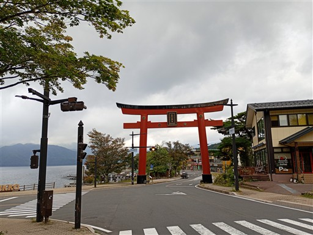
G7 NIKKOの記念モニュメントが目立つ場所に設置されている。
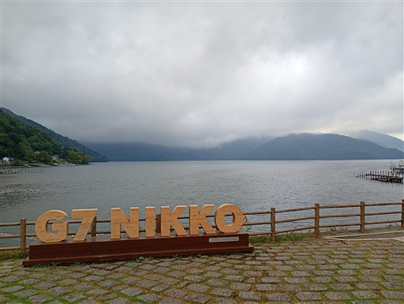
中善寺の立木観音。2006年に日光に来た時に観光したが、
本日は朝早いのでまだオープンしていない。
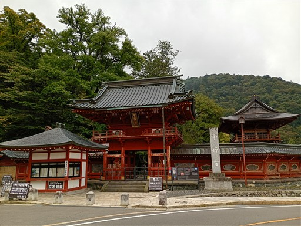
湖岸沿いの車道を歩いていく。
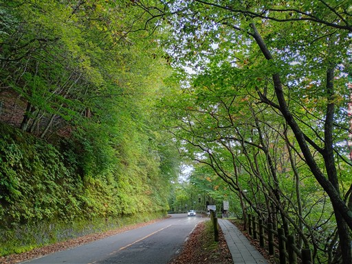
旧イタリア大使館別荘。湖の畔に建てられている。
こちらもオープン前。
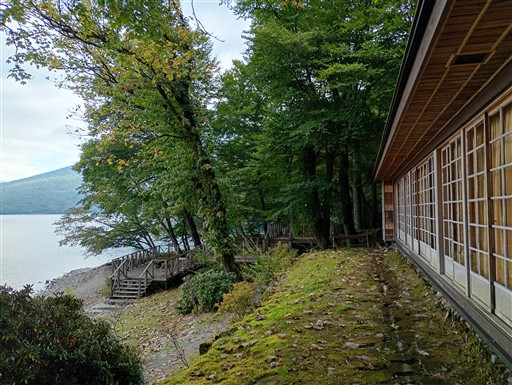
前のベンチに腰掛けると、素晴らしい展望が広がる。
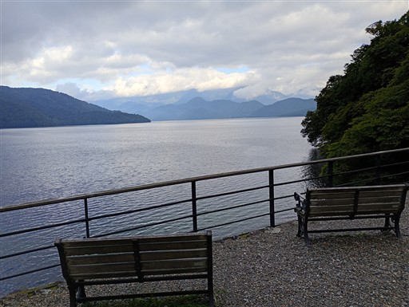
湖畔から望む男体山。山頂は雲の中だが、思ったより良い展望が得られる。
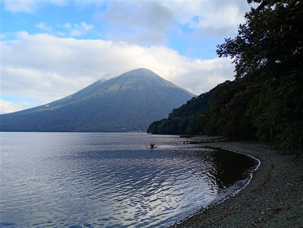
桟橋から水面を見る。とてもきれいな水だ。
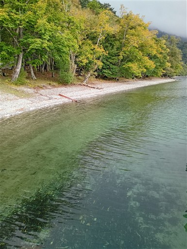
樹林帯の中の道。道が分からなくなったという人に声をかけられ、
阿世潟峠まで一緒に歩くことにする。
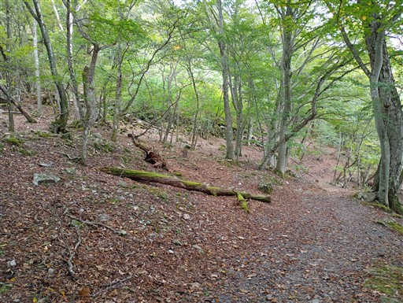
この辺りは猿が多くみられる。人慣れしているのか逃げようとしない。
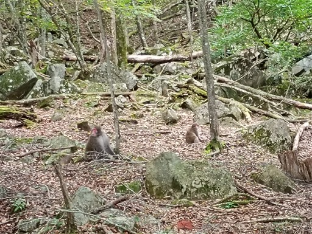
阿世潟に到着。ここで湖畔道から離れて登山道になる。
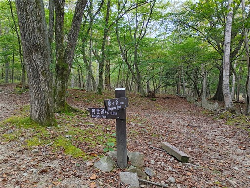
整備されていて歩きやすい道だ。
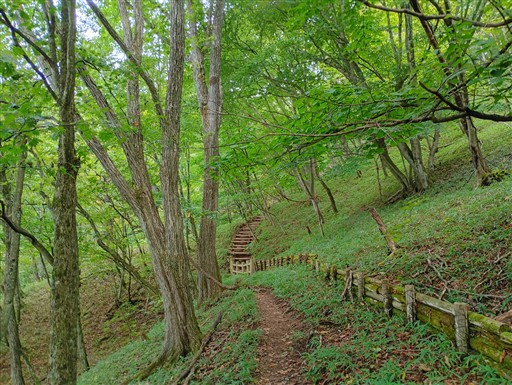
あっという間に阿世潟峠に到着。
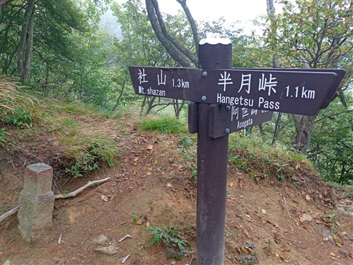
ここから社山への尾根道。登山道は雲に覆われる。
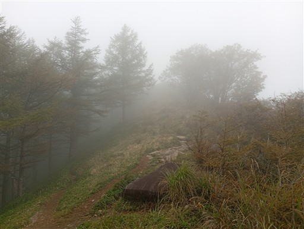
笹が生い茂っている。濡れているので厄介だ。
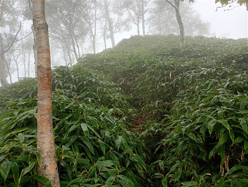
社山山頂に到着。標高1827m。
17年振りの登頂。展望はない。

古い三角点が置かれている。
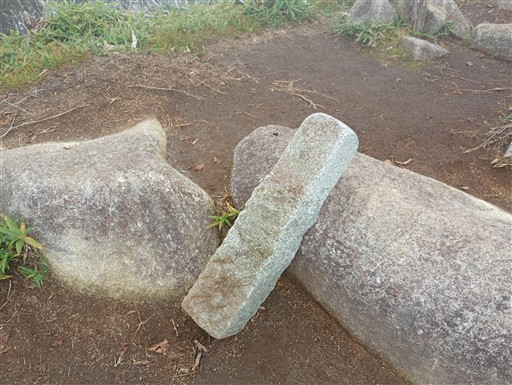
ここからは未知のルート。樹林帯に入る。
途端に登山道が分かりにくくなる。
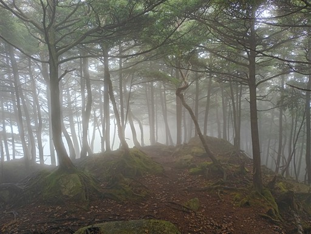
晴れていればよい景色が広がりそうな場所。
踏み跡は薄く、天気も悪いので道が分かりにくい。
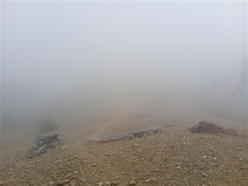
その後は濡れた笹原。あまりにも濡れるのでカッパのズボンを履く。
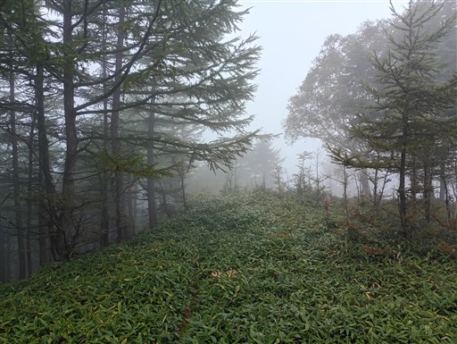
ダケカンバと笹原。まるで迷いの森のような雰囲気だ。
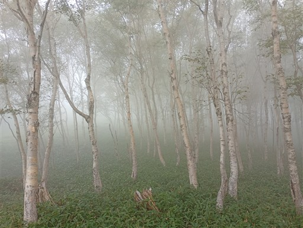
トラバースする場所があるが、道がかなり悪い。
ヤマレコの地図ではトラバース道になっているが、稜線を歩く方が良さそうだ。
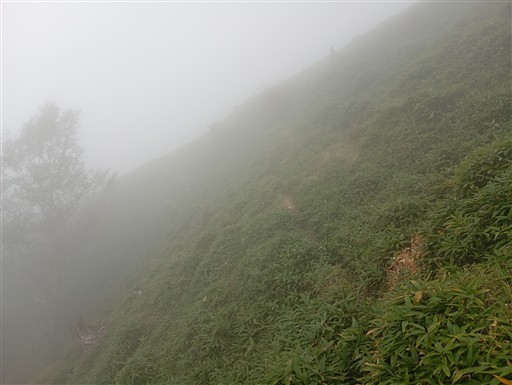
笹薮に突っ込む。深い場所でも腰辺りなのできつい藪漕ぎではないが、
とても一般道とは思えない。ほとんどバリエーションルートだ。
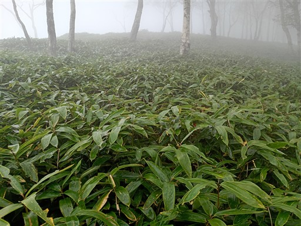
左手に広がる崩壊地。霧でよく見えない。
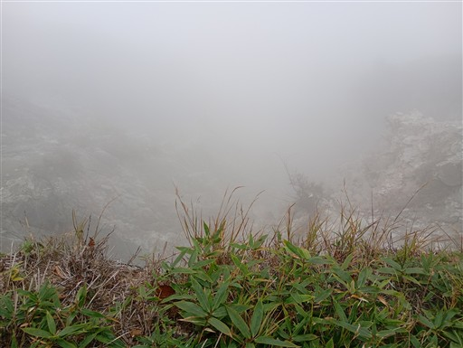
一瞬、雲が取れて視界が広がる。中禅寺湖がチラッと見える。
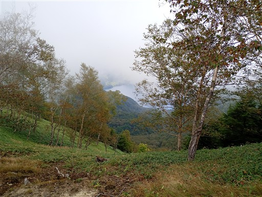
この辺りは尾根が広い。地形的には結構変化に富んだ稜線だ。
黒檜岳は展望が広がらないが、この辺りは晴れの日に歩きたくなる場所だ。
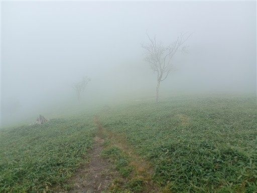
笹薮が終わって樹林帯の中に入る。
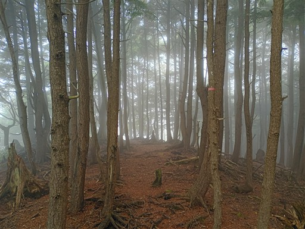
この標識付近が大平山との分岐点。ここから大平山を往復することにする。
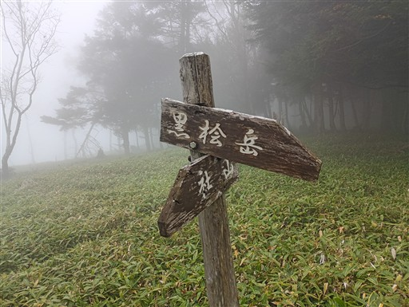
霧に包まれた森。踏み跡すらほとんど見当たらない。
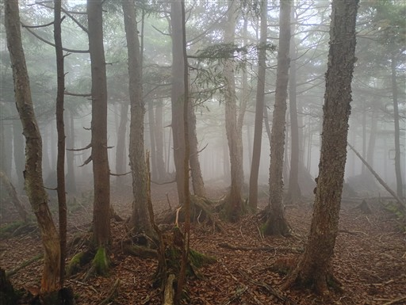
この辺りは尾根が広く、ルート取りが難しい。
GPSがあるから楽勝だが、地図とコンパスのみだと結構気を使いそうな尾根だ。

大平山に到着する。標高1960m。
この山は沢入山に登った時に眺めて気になった山で、是非とも登ってみたいと思っていた。
ヤマレコ地図では実線が引かれているが、完全なバリエーションルートだろう。
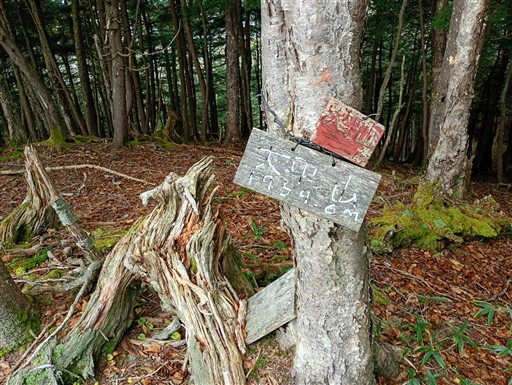
山頂で腰を下ろして昼食休憩。
少し雲がとれて、美しい笹原の斜面と尾根が見える。
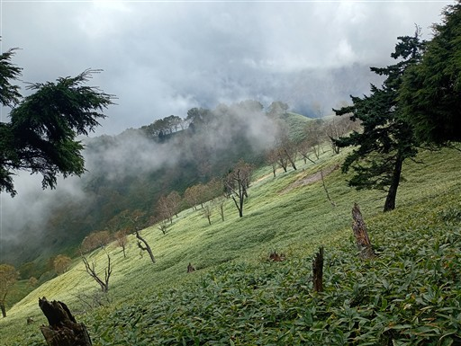
元来た道を戻る。稜線南側は笹が多いので、復路は笹を避けて少し北側を歩く。
青空が見えてきた。
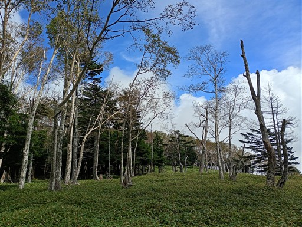
分岐点に戻ったら次なる目的地の黒檜岳に向かう。
この辺りは過剰なほど登山道を示す標識が多い。笹もなくなり歩きやすくなる。
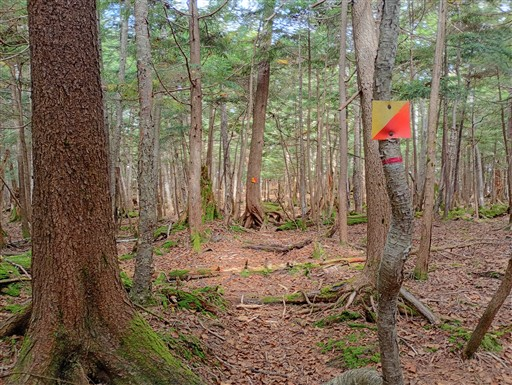
黒檜岳分岐に到着。
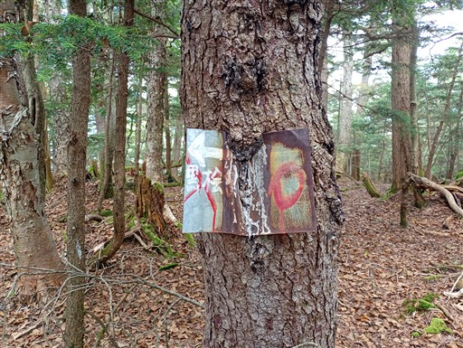
樹林帯の中の道を歩く。もう笹は出てこなさそうだ。
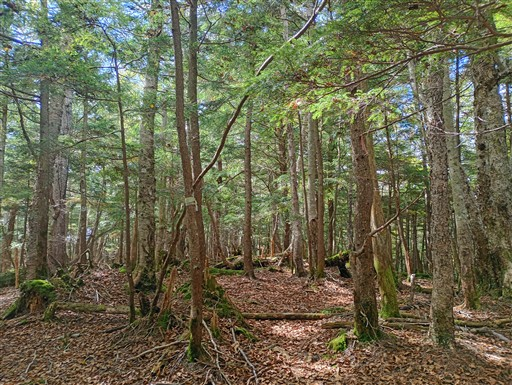
黒檜岳山頂到着。標高1976m。
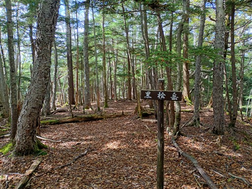
その先のもう一つの山頂まで歩いてみる。
いずれにせよ展望が広がらない。
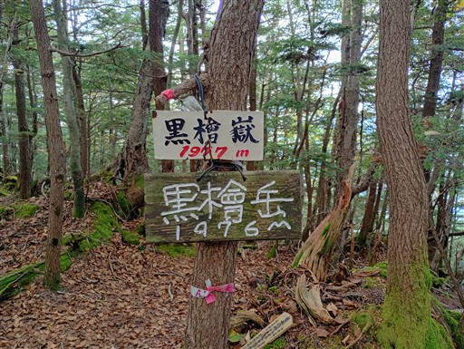
分岐点まで戻ったら下山開始。下山道はシャクナゲが多い。
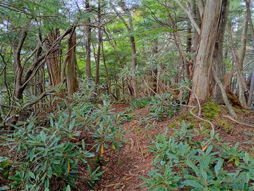
立派な木。
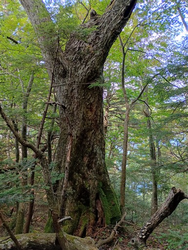
結構急斜面の登山道が続く。
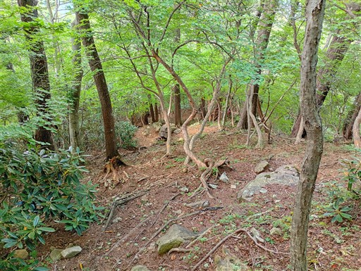
樹間から見えているのは太郎山だろうか？あの辺りは晴れている。
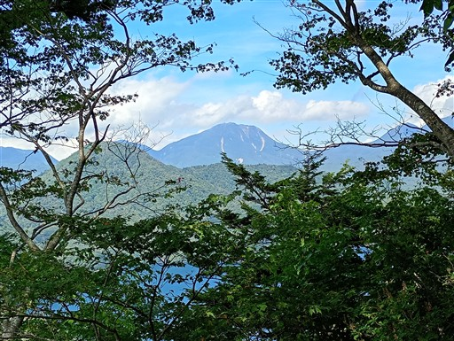
巨大なサルノコシカケ。
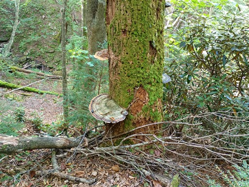
最後は緑に覆われた林床を歩く。
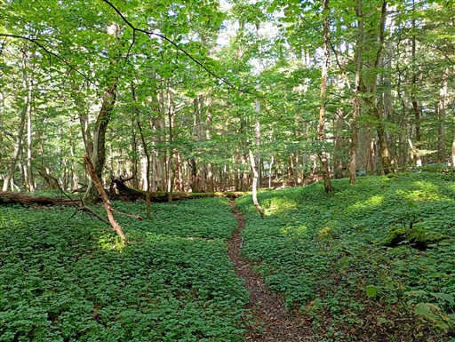
中禅寺湖畔に出てくる。青空がきれいだが男体山の山頂は雲の中だ。
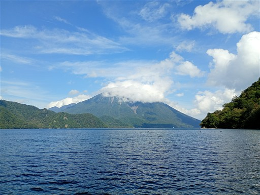
しばらく、遊歩道ではなく湖岸沿いを歩く。
倒木が結構邪魔だ。
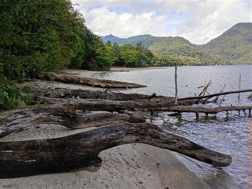
湖に注ぐ川があるところで遊歩道に戻る。
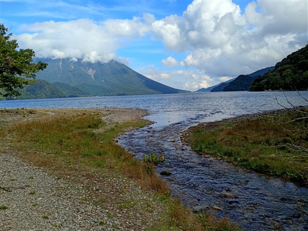
湖岸沿いの道。樹林帯の中だが、右手には常に中禅寺湖が見える。
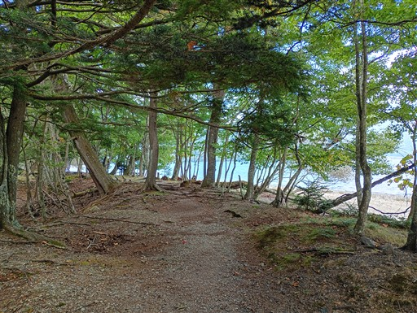
男体山も常に見えている。日光のシンボルであることがよく分かる。
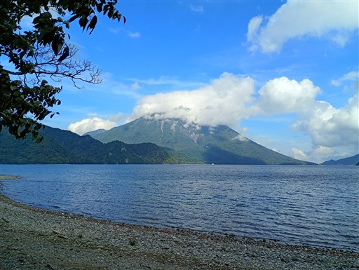
立派な吊り橋。思ったよりも中禅寺湖に注ぐ川の数が多い。
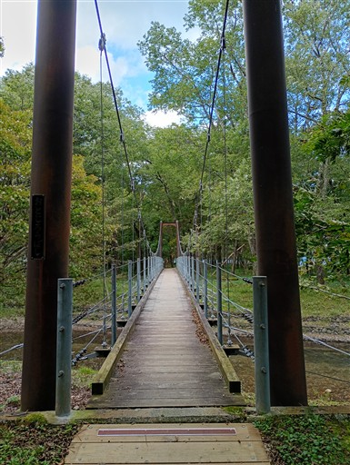
木の根が横向きになっているような不思議な木。
根を張った後、一度倒れてしまったのだろうか？
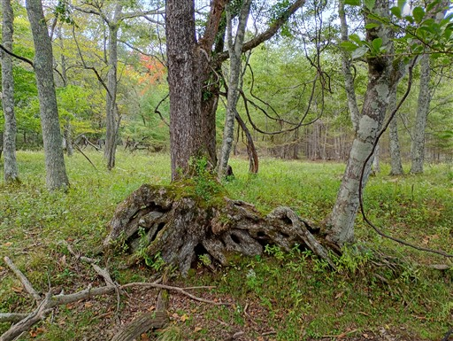
千手ヶ浜に到着。バスの時間まで余裕があるので、おやつ休憩を取る。
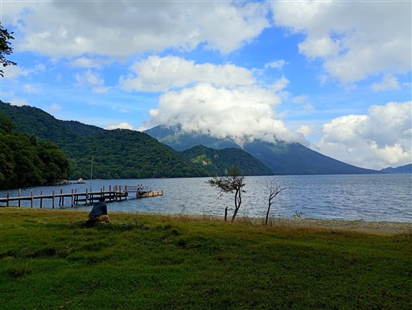
千手ヶ浜バス停に移動。標高1270m。
ここからバスで駐車場まで移動する。
今回歩いたルートは社山～黒檜岳が思った以上に登山道が整備されていなかった。
濡れた笹薮は不快だったが、美しい景色が広がりそうな稜線ではあった。
もう少し天気が良い日に来るべき山だった。